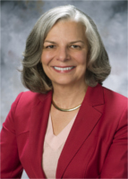
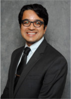

Panels
Come join in a discussion with experts about important areas affecting physicians scientists
Team Based Science
The past several decades have witnessed a dramatic increase in the scale and complexity of scientific and translational research. As the complexity of today’s most pressing health issues and diseases is revealed, collaborations among scientists trained in different fields, from bioinformatics to molecular genetics to biomedical policy, have become essential for exploring and advancing biomedical research discoveries. Given their dual training in medicine and scientific research, physician scientists are poised to lead team science and the multidisciplinary research initiatives. Our session aims to answer: What constitutes successful team science? What are examples physician scientists have used in their research endeavors to promote team science productivity? Why do some research teams succeed while others do not? What factors maximize a research team’s productivity or effectiveness? What detracts from team science success?
- Schedule: Saturday, April 22, 6:00 pm – 7:00 pm
- Location: TBD
Participants

Julie Gerberding, MD, MPH, Executive Vice President & Chief Patient Officer of Strategic Communications, Global Public Policy, & Population Health
Dr. Julie Gerberding is Executive Vice President and Chief Patient Officer, Strategic Communications, Global Public Policy, and Population Health at Merck & Co., Inc., where she also has responsibility for the “Merck for Mothers” global program to prevent maternal mortality and the Merck Foundation. She joined Merck in January 2010 as president of Merck Vaccines and led efforts to make the company’s vaccines more available and affordable to people in resource-limited countries around the world.
She left her tenured faculty position at the University of California, San Francisco in 1998 to lead the U.S. Centers for Disease Control and Prevention (CDC) Division of Healthcare Quality Promotion and then served as the CDC Director from 2002 to 2009. As director, she led the CDC through more than 40 emergency responses to public health crises, including anthrax bioterrorism, SARS, and natural disasters. She also advised governments around the world on urgent issues such as pandemic preparedness, AIDS, antimicrobial resistance, tobacco, and cancer.
Dr. Gerberding currently serves on the Boards of CWRU, National Association of City and County Health Officials (NACCHO) Foundation, MSD Wellcome Trust Hilleman Laboratories, and the BIO Executive Committee. She has received more than 50 awards and honors, including the United States Department of Health and Human Services (DHHS) Distinguished Service Award for her leadership in responses to anthrax bioterrorism and the September 11, 2001 attacks. She was named to Forbes Magazine's 100 Most Powerful Women in the World in 2005 through 2008 and to TIME Magazine's 100 Most Influential People in the World in 2004.
Work/Life Balance
This panel will discuss how to balance work responsibilities and career building with aspects of social and family life in the context of a physician-scientist lifestyle.
- Schedule: Sunday, April 23, 10:00 am – 11:00 am
- Location: TBD
Participants

Michelle Caunca, BS (Moderator), MD/PhD Student at University of Miami Miller School of Medicine
Ms. Caunca received her B.S. in Neurobiology with a minor in Psychology at the University of California, Irvine (UCI), graduating cum laude with Honors in Biological Sciences and Campuswide Honors. She worked in the The 90+ Study at UCI under the mentorship of Claudia H. Kawas, MD, and Maria Corrada, ScD. Currently, she works with Clinton Wright, MD, MS and Tatjana Rundek, MD, PhD in the Northern Manhattan Study at the University of Miami Miller School of Medicine. She currently studies brain MRI metrics of white and gray matter integrity and their relation to cognition in an older, mostly Hispanic/Latino cohort. She aspires to become a physician-scientist specializing in neuroepidemiology and cognitive aging.

Alessia Fornoni, MD, PhD, Director and Chair, Peggy and Harold Katz Family Drug Discovery Center
Dr. Alessia Fornoni obtained her MD and her PhD degree in Medical Pharmacology at the Universita' degli Studi di Pavia (Italy). She later joined the laboratory of Renal Cell Biology (Vascular Biology Institute) at the University of Miami, where she worked on animal models of diabetic nephropathy and on the role of mesangial stem cells progenitors under the direct supervision of Drs. Liliane and Gary Striker. After her post-doctoral fellowship, Dr. Fornoni completed the Internal Medicine and Nephrology training at the University of Miami (Basic Scientist Investigator pathway). She is Board Certified in both Internal Medicine and Nephrology. She currently devotes 75% of her time to research and 25% to patient care. Dr. Fornoni’s research interest is focused on proteinuria and kidney diseases, with particular interest in diabetic nephropathy and focal and segmental gloemrulosclerosis. Dr. Fornoni is currently interested in the intracellular signaling pathways modulated by intracellular lipids. Dr. Fornoni research goal is to translate her basic science findings into clinical research through the identification of new therapeutic targets for chronic kidney disease.

David Ostrow, MD, PhD, DavidOstrowConsulting, David Ostrow & Associates, LLC
During his training in the MD/PhD Program at the University of Chicago, Dr. David Ostrow co-founded the first gay community health center, now the Howard Brown Health Center of Chicago. There he identified Hepatitis B as a common sexually transmitted infection (STI) among gay men, which led to his Chicago PI role in the CDC-funded Hep B Epidemiology and Vaccine Efficacy Studies (1976-81). As the founding PI of the subsequent Chicago MACS (1983-1985), then co-PI of the Coping & Change Study of Men in the Chicago MACS (1985-1999), and later founder of the Behavioral Working Group (BWG) of the MACS (1991-2011), he focussed on the relationship between sexual behavior, drug use and the evolution of HIV transmission and prevention among drug using MSM. He has published 175 peer-reviewed papers, 50+ book chapters and presented 60+ times at International AIDS Conferences. He is an Investigator or consultant on most of the NIDA funded studies of drugs, alcohol and HIV in the MACS, including his own study of the Social and Risk Networks Assessment of younger Black MSM (2009-2011). This study led to a recently funded study of the dynamic roles of social and risk networks as drivers of the increasing epidemic of new HIV infections among younger Black MSM in Chicago. As the senior behavioral investigator in the MACS, he plans to use the upcoming open recruitment of men at highest risk of or recently infected with HIV to extend these studies to the geographically and racially diverse cohort of HIV+ and HIV- men.
Since the late ‘90s, Dr. Ostrow has been active in the movement to change failed national drug policies, such as cannabis prohibition, with more effective and compassionate policies, including regulation and legalization of cannabis use, integration of Cannabinoid Medicine training into the Medical Student curriculum, and the formation of a Community-Based Clinical Cannabis Research Network that can inform scientifically based MC treatment guidelines.

Karen Sibert, MD, aPennedPoint Blog Author and Anesthesiologist at UCLA
Born and raised in Amarillo, Texas in the 1960s, Karen was accepted to Princeton as part of the school’s second entering class of female students. She graduated with an English degree and became a reporter for the Wall Street Journal. She later applied and was accepted to Baylor College of Medicine. After choosing to specialize in anesthesiology, Karen completed her residency training and fellowship in anesthesiology at the Yale University Hospital in New Haven, Connecticut. She then joined the faculty at Duke University School of Medicine. Since 1999, Karen has worked in Los Angeles as a clinical anesthesiologist and an Associate Professor of Anesthesiology, teaching residents and fellows in training. She hasn’t let that get in the way of her writing career. Besides authoring aPennedPoint blog, Karen was recently published in The New York Times and is a regular contributor to the CSA Bulletin. Karen’s name also frequently appears as an author of articles in medical journals and chapters in both medical and general interest books. She practices full time, specializing in anesthesia for thoracic surgery and other high-risk adult cases.
The Dos and Don'ts of MSTP Admissions
Come visit with the MSTP directors to learn about how you can become a competitive applicant. The application process can be daunting so this is a great opportunity to be able to ask your questions directly to those with the inside scoop.
- Schedule: Sunday, April 23, 11:00 am – 12:00 pm
- Location: TBD
Participants
Lawrence (Skip) Brass, MD, PhD, University of Pennsylvania MSTP director
Lawrence (Skip) Brass, MD PhD is a graduate of Harvard College and Case Western Reserve University, where he received his MD and a PhD in biochemistry. After residency training in internal medicine he became a fellow in Hematology-Oncology at the University of Pennsylvania where he served as Vice Chair for Research in the Department of Medicine from 2004 to 2007, and is currently Professor of Medicine and Professor of Systems Pharmacology and Translational Therapeutics. He has led the NHLBI-funded Hematology Research Training Program since 1994. Dr. Brass became Associate Dean for Combined Degree and Physician Scholars Programs and Director of Penn’s MSTP in 1998. He has been active at the national level in the development of training programs for physician-scientists, has served as President of the National Association of MD-PhD Programs, Chair of the AAMC GREAT section on MD-PhD training, was a member of the NIH Physician-Scientist Workforce advisory group in 2013-2014, and has traveled throughout the U.S. and Canada to speak about physician-scientist training and act as a reviewer and advisor on MD/PhD programs in particular. He is also a practicing hematologist whose research interests are in the fields of hemostasis and vascular biology. He has been continuously funded by the NIH HLBI since the mid-1980’s, has been elected to membership in the American Society for Clinical Investigation and the Association of American Physicians, was an Established Investigator of the American Heart Association and is a recipient of the Distinguished Career Award from the International Society of Hemostasis and Thrombosis, the Christian R. and Mary F. Lindback Award for Distinguished Teaching from the University of Pennsylvania, the inaugural Bert Shapiro Award for Leadership, Dedication and Service to the Physician-Scientist Community from the National Association of MD/PhD Programs, and numerous teaching awards from students at the Perelman School of Medicine.

M. Kerry O’Banion, MD, PhD, University of Rochester School of Medicine & Dentistry
M. Kerry O’Banion, MD, PhD, Professor and Vice-Chair of Neuroscience and Professor of Neurology at the University of Rochester School of Medicine & Dentistry. He trained in the Medical Scholars Program at the University of Illinois at Urbana-Champaign, receiving his MD and PhD and being named to the AOA National Medical Honor Society in 1987. Originally trained as a molecular virologist, Dr. O’Banion has devoted the past 25 years to understanding the role of neuroinflammation in acute and degenerative brain disease and is an international leader in the fields of Alzheimer’s disease and CNS radiation injury. His original discovery that cyclooxygenase-2 plays a major role in inflammation fueled the development of several important new drugs, the COX 2 inhibitors (e.g. Celebrex®).
Dr. O'Banion currently directs the Medical Scientist Training Program (MSTP) at the University of Rochester, a position held since 2000. Dr. O’Banion was Chair of the MD-PhD Section of the Association of American Medical Colleges’ Graduate Research, Education, and Training (GREAT) Group in 2009-2010, and currently serves on the American Physician Scientists Association (APSA) Board of Directors.
Transitioning
Mirroring the shift from medical to graduate school, the return to- and finishing of- medical school prompts medical scientist trainees to address one glaring challenge: starting the next chapter of our professional lives. The purpose of this panel is to enlighten audience members on how to smoothly navigate the often-stressful and seemingly complicated process of transitioning from the later phase of the MD/PhD curriculum towards your own, personal career trajectory. Consisting of a 4th year medical student, PSTP residency director, and resident/fellow on the panel, the intention is to open the entire room up for discussion. Though the focus is on transitions, all topics are highly encouraged for debate, ranging from questions about the traditional academic sequence (e.g., residency, interviewing, match, fellowship, etc.) to the more provocative consideration of non-academic career paths.
- Schedule: Sunday, April 23, 11:00 am – 12:00 pm
- Location: TBD
Participants

Steven D. Freedman MD, PhD, Harvard Medical School
Steven D. Freedman M.D., Ph.D. is Director of the Pancreas Center at Beth Israel Deaconess Medical Center, Chief of the Division of Translational Research, and Professor of Medicine at Harvard Medical School, Boston, Massachusetts. He received his Ph.D. from Yale University School of Medicine in 1981 followed by the M.D. degree at the University of Connecticut in 1986. He completed his residency and fellowship in Gastroenterology at Beth Israel Hospital and has remained on faculty since 1991. He is an internationally recognized leader exocrine pancreatic disease with a particular focus on pancreatitis and cystic fibrosis with an extensive research program that encompasses both basic science discovery as well as clinical trials.
Dr. Freedman was recently elected as the Section Vice Chair position of the Pancreatic Disorders (PAN) Section of the AGA Institute Council. He has an extensive track record on training the next generation of physician scientists. Furthermore, with the support of the Cystic Fibrosis Foundation, Dr. Freedman has developed and launched a national initiative to train pediatric and adult gastroenterologists across North America in the diagnosis and treatment of the GI manifestations of CF. Recently, he has extended his training initiatives to now include his recent appointment as Director of the Beth Israel Deaconess Medical Center Internal Medicine Residency Physician Scientist Track.

Neelroop (Neel) Parikshak MD, PhD, University of California, Los Angeles
Neelroop (Neel) Parikshak was born in Ahmedabad, India. While he was in elementary school, his family moved throughout the midwest and ultimately settled in West Virginia. Through grade school, Neel developed a love for math and science and first became interested in the neurosciences around the end of high school, when he experienced a few months of facial paralysis from Bells Palsy. He next attended college at Rice University, where he majored in Mathematics and Biochemistry and found that he enjoyed both neuroscience and medicine. Unable to decide between the two career routes, he joined the MD/PhD program at UCLA and completed his thesis work in the laboratory of Daniel H. Geschwind. His work focused on the genomics of neuropsychiatric disorders, with a particular emphasis on genes and pathways affected in autism spectrum disorder. He is generally interested in applying genomics, bioinformatics, and molecular biology approaches to dissect the etiology of complex diseases and identify data-driven therapeutic targets. He will be starting a Neurology residency program this summer and plans to continue pursuing his research interests. If all goes as planned, he hopes to be juggling clinical work, running a lab, and having a happy family life at home before he gets too many more grey hairs.